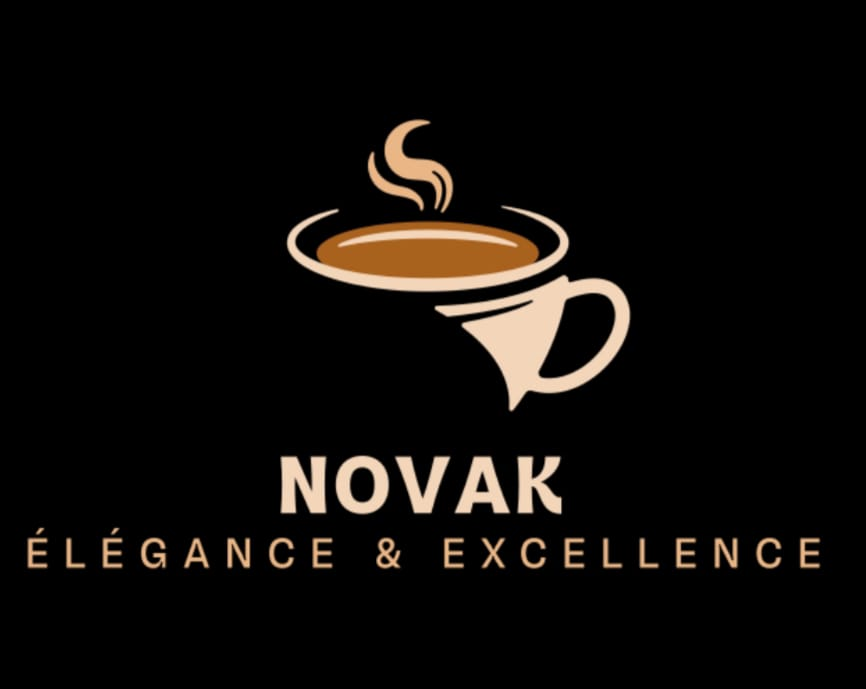

Découvrez notre passion pour le café et l'art de créer des moments uniques.
Depuis notre ouverture en 2001, s'est dédié à offrir une expérience unique à chaque tasse. Nous sélectionnons soigneusement nos grains de café et préparons chaque boisson avec amour et savoir-faire. colaboartion pour jobintech